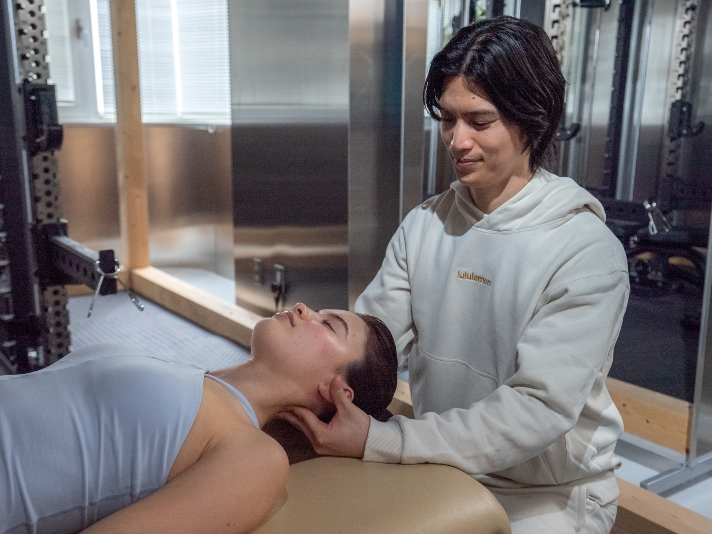
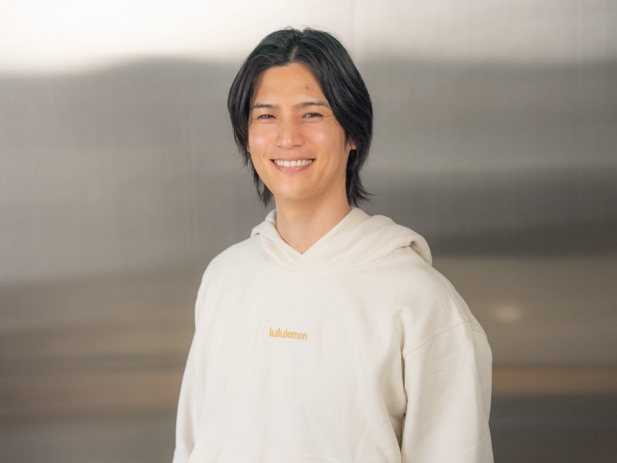
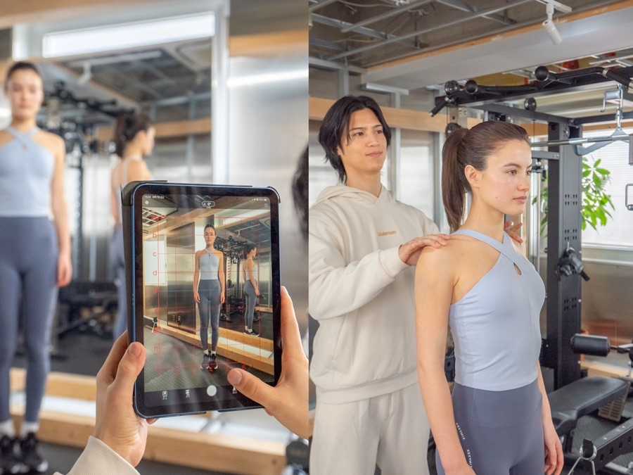
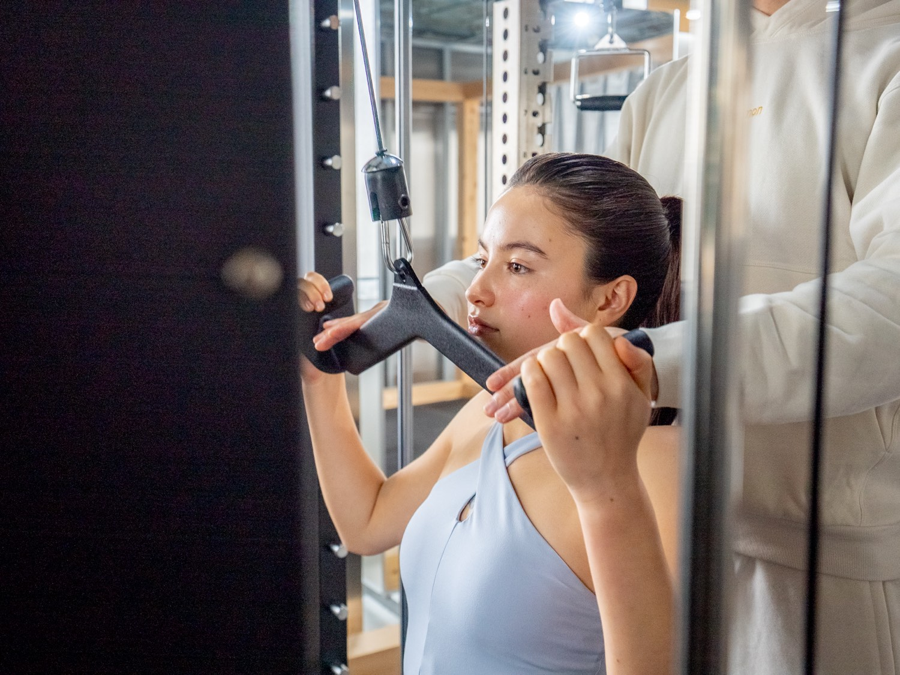
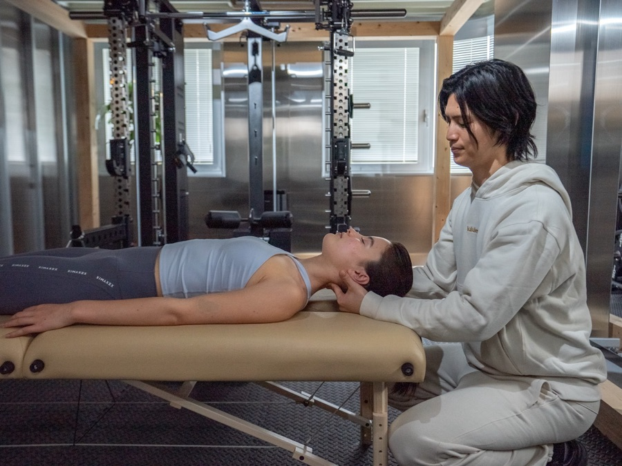
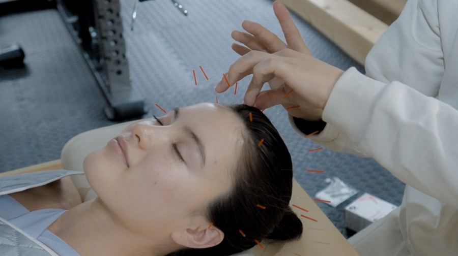
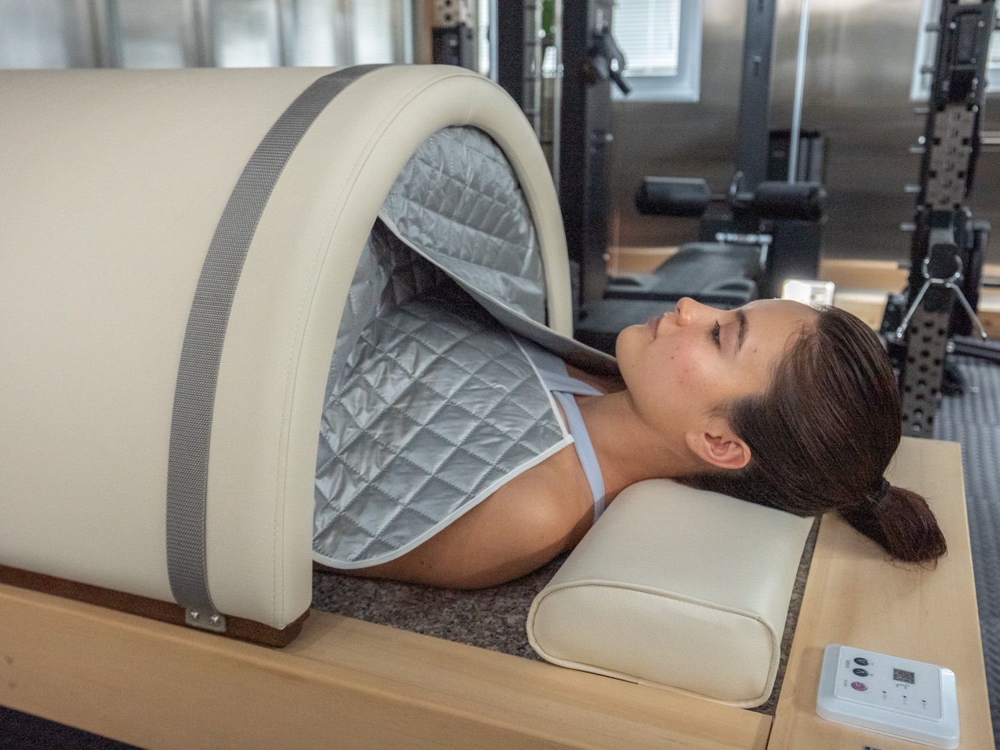
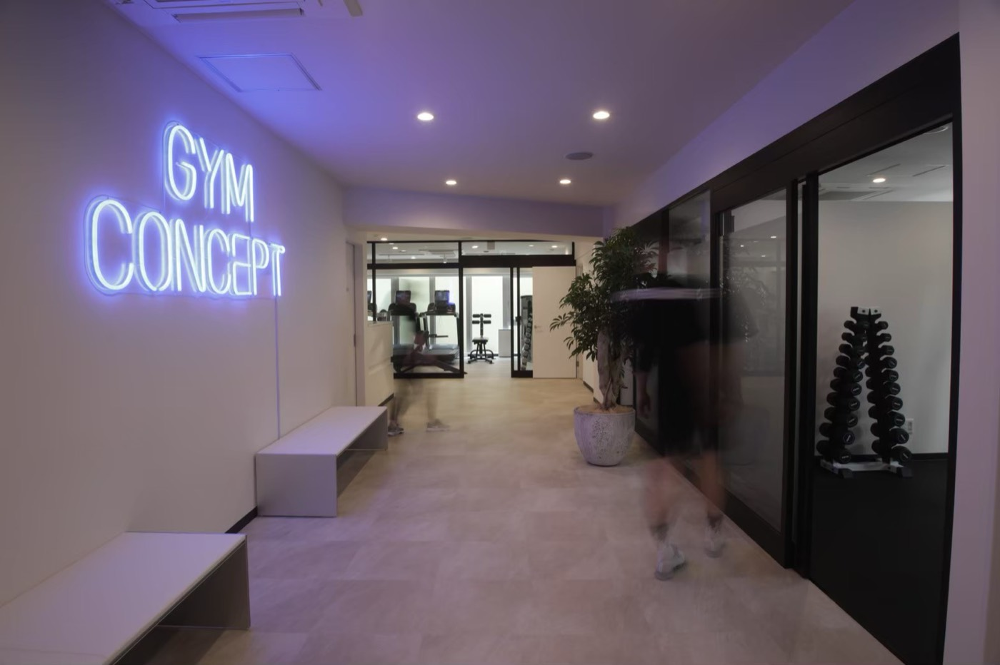
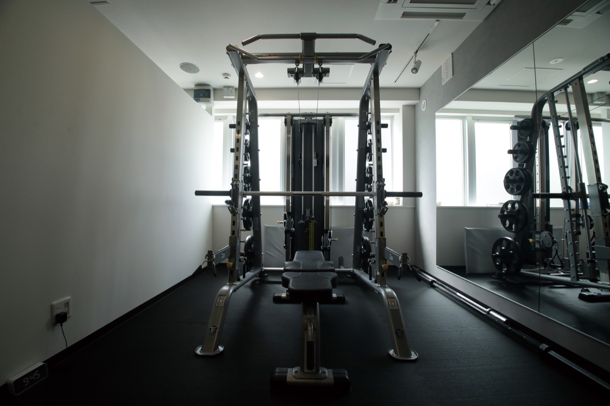
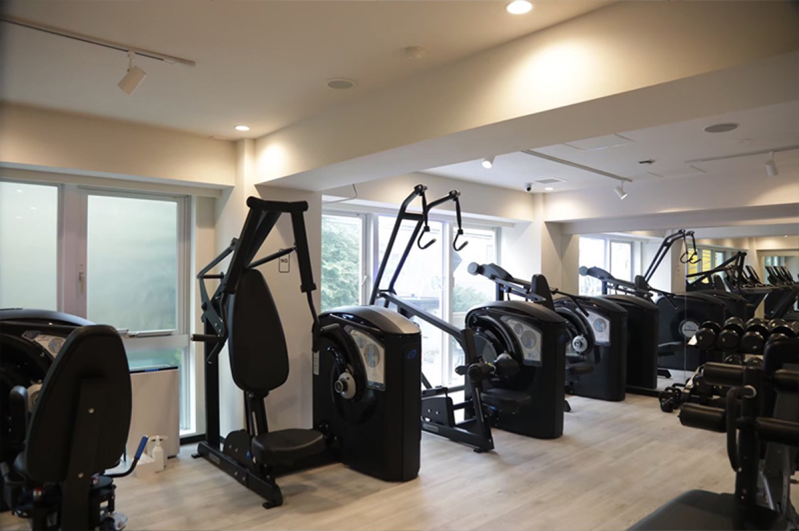

03
Flow
血流を巡らせ、循環を最適化する
そして血流を巡らせ、循環を最適化する。
整体・鍼灸・温熱

病院に行くほどじゃない。
でも本調子でもない。
その“なんとなく”には
理由があります。
仕事のスキルにも美容にも学びにも投資してきた。マッサージも整体もジムもサウナもひと通り試した。
でも——その場では軽くなるのに数日で戻る。かけたお金と時間の割にコンディションが根本的に変わらない。
それもそのはず。多くのケアはその日をしのぐためのもの。“なぜ不調が起きるのか”には手をつけていない。
いちばん大事な資本なのに、いちばん向き合えていない。それが自分の「体」かもしれません。
「なぜ不調が起きるのか」に手をつけるには、体を部分で診ていては届きません。姿勢も呼吸も巡りも、ぜんぶ繋がっているからです。

一木 勇太Yuta Ichiki
代表整体歴17年。これまで2万人以上の体と向き合ってきました。鍼灸師・柔道整復師の国家資格を取得後、整骨院の院長として5年、パーソナルジムの店長として5年。2025年には禅療法士を取得。ほぐす整体、鍛えるトレーニング、巡らせる鍼灸——ふつうは別々の人が担うこれらを、一人で診られる。だから体を分けず、不調の“理由”そのものにアプローチできます。
かつて私自身、心身が限界を迎えた時期がありました。体を動かして呼吸と姿勢が変わると、心にも静けさが戻ってくる。その実感がkuukanの原点です。ただ鍛える場所ではなく、体を通して自分を取り戻す場所でありたい。
Method
運動・食事・睡眠を整えても本調子にならない。その理由は土台となる体が働ける状態にないからです。kuukanは姿勢・呼吸・血流の順に立て直します。
Flow
そして血流を巡らせ、循環を最適化する。
整体・鍼灸・温熱
Breath
次に呼吸を深め、酸素を取り込む。浅い呼吸のままでは、体は回復に向かえない。
呼吸・坐禅
Structure
まず姿勢と筋肉の歪みを立て直し、体にかかり続ける余計な負荷を断つ。
整体・トレーニング
姿勢が整うと呼吸が深まり、血流が巡る。"なんとなく不調"の多くはこの土台の不全です。順番に立て直すから、変化が続きます。
「姿勢→呼吸→血流」を、あなたの状態に合わせて組み合わせます。

姿勢や体の歪み、動きのクセを可視化し、不調の出どころを最初に見立てる。

立て直した体を“使える体”へ。姿勢改善・体幹強化を軸にした、無理のないファンクショナルトレーニング。

骨格・筋膜の歪みを丁寧に読み取り、手技で全身のバランスを立て直す。

東洋医学の知見に基づき、経絡・ツボへ的確にアプローチ。自律神経の調整と自然治癒力の活性化を促します。
完全予約制のため、普段は空き枠に限りがあります。今期は新規の方を若干名のみご案内。岩盤ベット30分の特典は、今期の体験の方限定です。
初回体験セッション（90分）
姿勢矯正トレーニング × 全身整体（60分）＋《今だけ》岩盤ベット 30分
手ぶらOK（着替え・シューズ・水完備）
今だけの3大特典
登録料 ¥10,000 ＋ 入会金 ¥20,000 → ¥0
当日ご入会で ・ いつでも解約可能
岩盤ベット 30分 無料
温めて巡らせ、整った状態を仕上げる時間

会員は GYM CONCEPT 通い放題
9:00–23:00



長年の反り腰で、歩くのもつらい時期がありました。整体とトレーニングを続けるうちに、歩くのが楽に。趣味のゴルフのスイングも安定しました。表面だけでなく、根本から変わっていく実感があります。
4年以上、通っています。一人ひとりに合わせたメニューを丁寧に組んでくれるので、毎回きちんと変化を感じられる。鍼も整体もトレーニングも受けられるトータルケアは、ここでしか得られない価値だと思います。
2年以上、続けています。姿勢が変わって、長年の肩こりが楽になりました。何より一木さんの人柄があるから、無理なく通い続けられています。
坐骨神経痛に悩んでいましたが、的確な施術で楽になりました。朝早くから夜遅くまで開いているので、忙しくても通い続けられるのが助かっています。
※体験談は個人の感想であり、効果を保証するものではありません。
はい、完全予約制となっております。予約カレンダーよりご予約ください。
続けたい方には2つの形を。月額で通う「プレミアムセッション（月4回・月額¥52,000）」と、ご自身のペースで通える「回数券（60分×10回・¥150,000）」です。詳細は体験当日にご案内します。
クレジットカードのみのお取り扱いとなっております。
はい、ご購入日から1年間が有効期限となります。期限内であればご自身のペースでご利用いただけます。
動きやすい服装でお越しください。お着替えのご用意もございますので、お仕事帰りでもそのままお越しいただけます。
月4回の定期的な通院をおすすめしています。お身体の状態や目標に合わせて、最適なプランをご提案いたします。
kuukan会員の方（サブスク月4回プラン以上）であれば、徒歩4分のトレーニングジム「GYM CONCEPT」を無料で通い放題でご利用いただけます。セッション日以外のトレーニングにぜひご活用ください。
天然鉱石を使用した温熱ベッドです。遠赤外線の温熱効果で身体を芯から温め、血行促進・代謝アップ・リラックス効果が期待できます。施術やトレーニングとの組み合わせがおすすめです。
はい、福利厚生としてご導入いただける法人プランをご用意しております。社員の方の健康管理・パフォーマンス向上にご活用ください。詳細はお問い合わせください。
その不調は放っておいても消えません。理由がある以上、向き合えば変えられる。体だけは、先延ばしにした分だけ取り戻すのに時間がかかります。
まず90分。自分の体の“理由”を確かめにきてください。